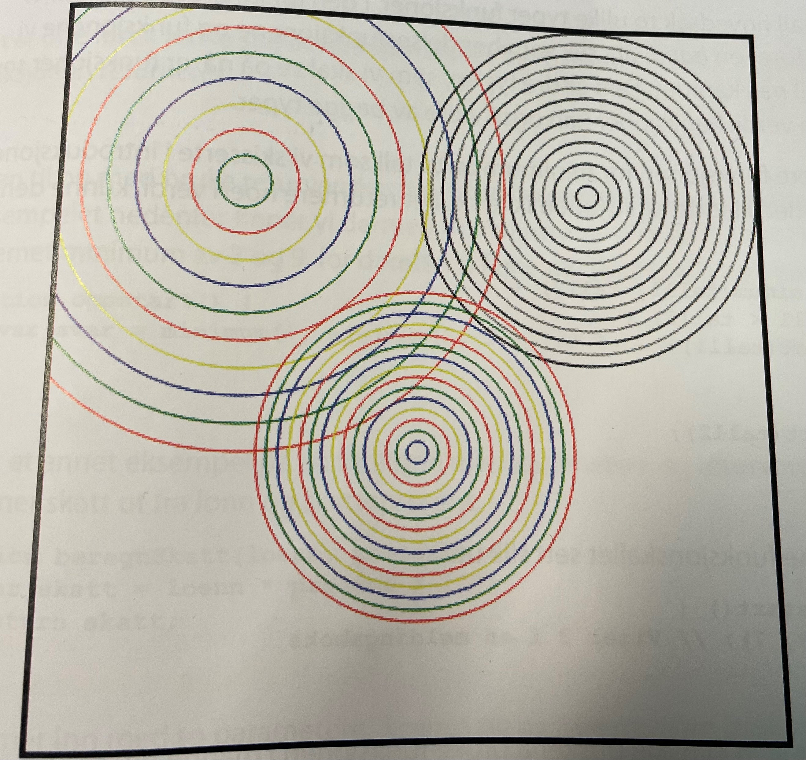

Dette eksempel vi skal lage en funksjon som tegner sirkel inne i sirkler. som
parametere har vi x- og y- koordinatene for senterpunktet til sirklene, radius på den
ytterste sirkelen, antall sirkler og fargene som skal benyttes.
i praksis lager vi nå en 2utvidelse" av hva som allerede finnes i javaScript for å tegne
med. Vi lager en ny funksjon som er basert på andre eksisterende funksjoner.
1. Leg et nytt HTML-dokumet du kallee "sirkeltegner.html" ut fra mal.html.
2. Legg inn et "canvas" som vi skal tegne på:
<body>
<canvas id="tegneflate" width="400" height="400" />
</body>
3. La canvaset få en kantlije rundt seg:
<style>
// tegneflate {border-style:solid;}
</style>
4. Lag funksjonen som trenger en rekke sirkler utenpå hverandre. funksjonen
tar som parametere x,y, radius på ytterste sirkel, antall sirkler, en arraymed
fargenavn som skal benyttes, og contexten som det skal tegnes på:
function sirkler(x, y, radius, antall, farger, ctx) {
var radiusTrekk = radius, / antall;
var teller =0;
while (teller < antall) {
ctx.strokestyle = farger[teller % farger.legth];
ctx.beginpath();
ctx.arc(x,y, radius, 0, 2 math.PI);
ctx.stroke();
radius = radius - radiusTrekk;
teller++;
}
}
5. Legg inn kode i oppstart-funksjonen som benytter funksjonen sirkler
til å tegne noen testsirkler:
var ctx = document.getElementById("tegneflate").getContext("2d");
var farge1 = ['red', 'green', 'blue', 'yellow'];
var farge2 = ['black', 'gray'];
sirkler (100, 100, 150, 10, farge1, ctx);
sirkler (300, 100, 100, 15, farge2, ctx);
sirkler (200, 250, 90, 15, farge1, ctx);
6. test nettsiden, og kontroller at sirklene blir tegnet.
inne i funksjonen sirkler lager vi først noen variablen. variabelen radiusTrekk
er verdien vi minsker radiusen med for hver sirkel. vi lager også en teller. for hver
gang programmet går gjennom løkke, settes først en linjefarge.